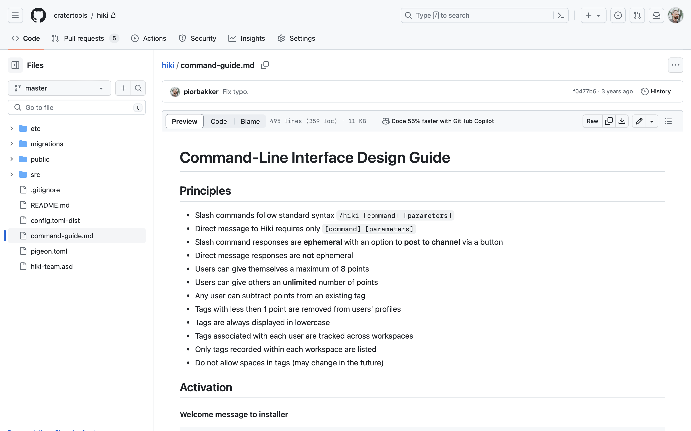
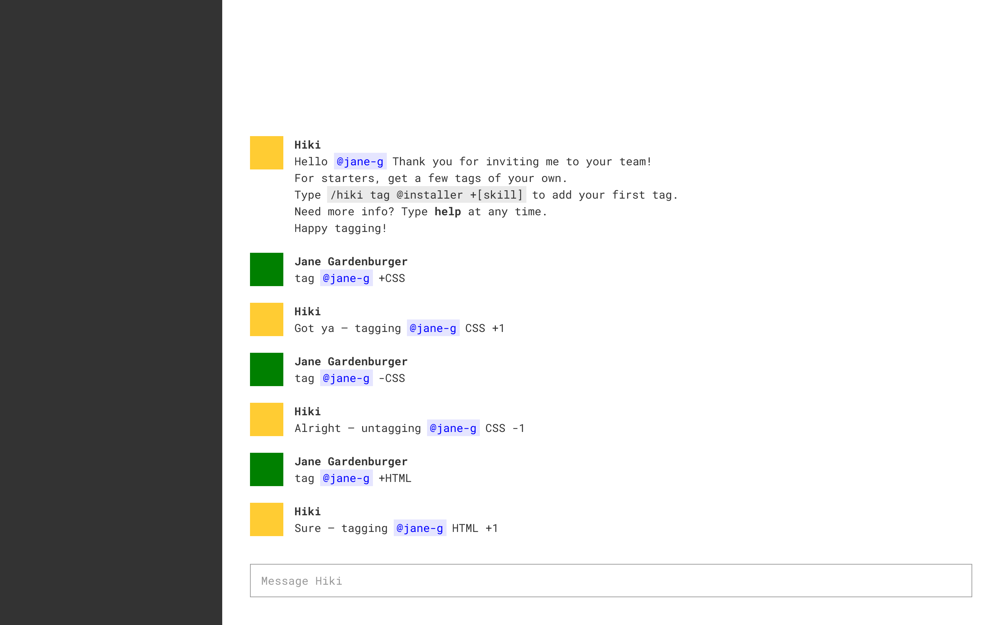
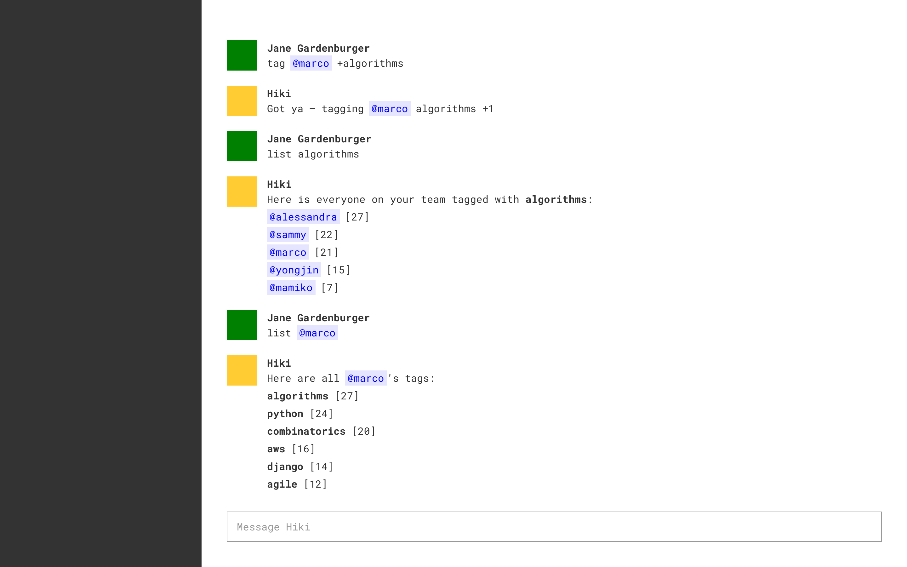
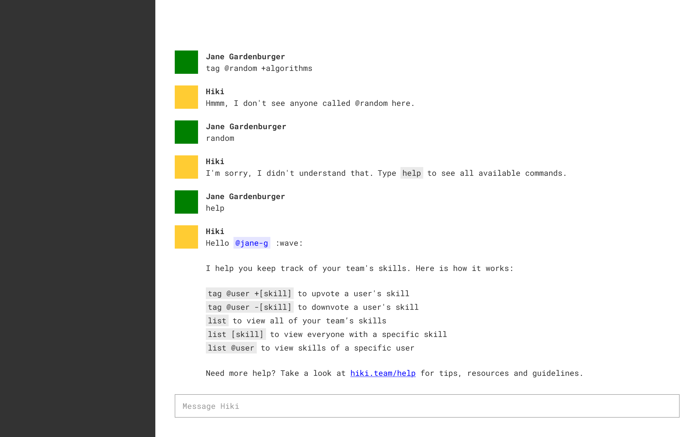
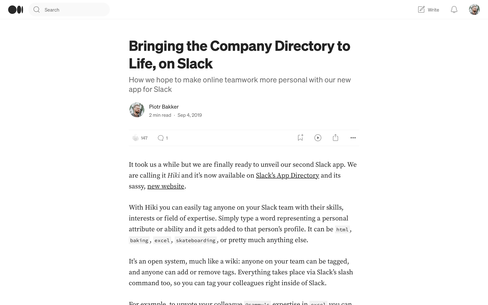
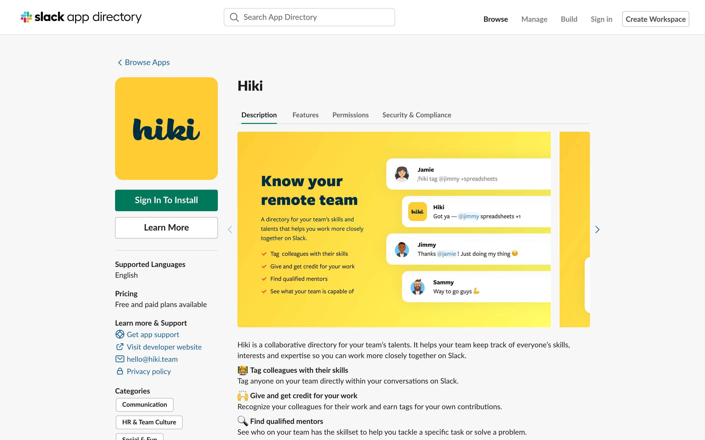
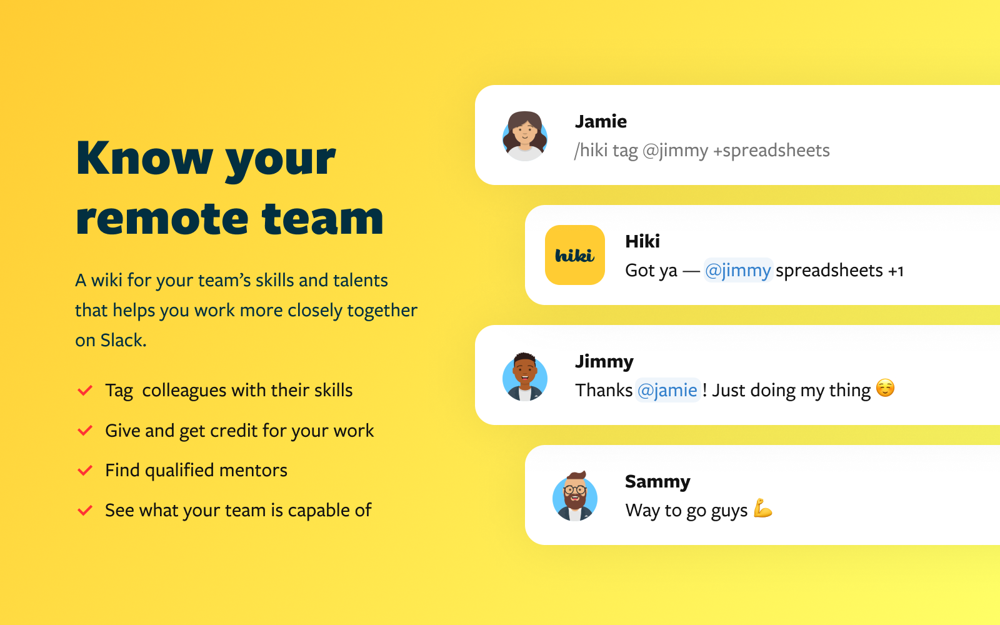
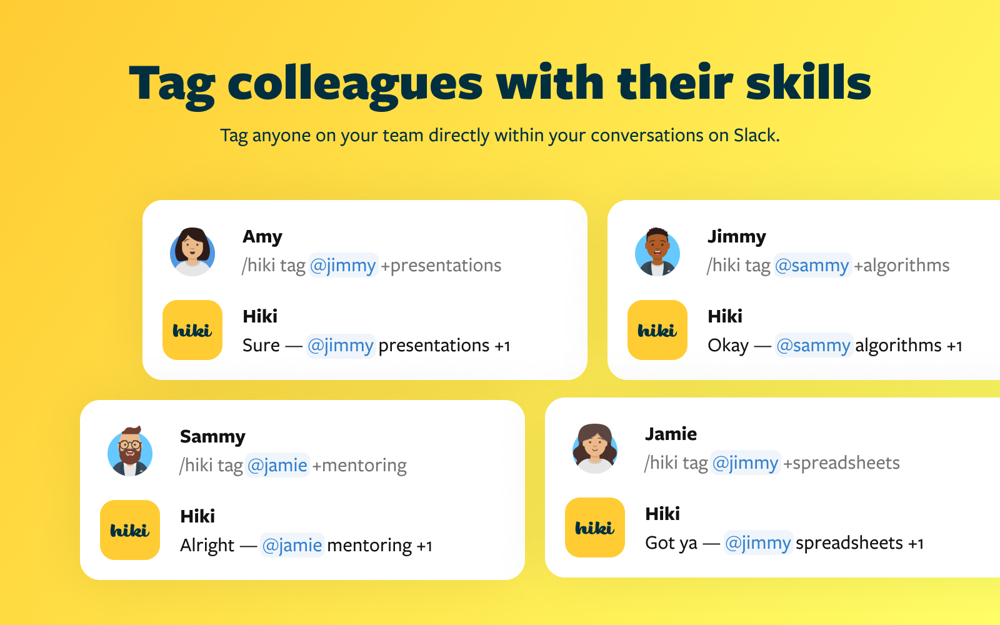
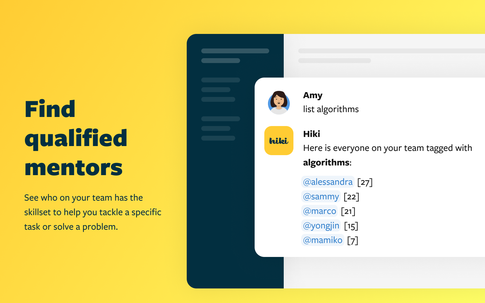

<main>
  <div class="container px-4 py-lg-5 mt-4 mb-4 mb-lg-5">
    <div class="row justify-content-center">
      <div class="col-md-10 col-xl-8 pe-lg-5">
        <a href="/" class="mb-2 text-sans-serif link-icon"><i class="ph-bold ph-caret-left me-1"></i>Back</a>
        <h1 class="display-3 heading-normal">Hiki.Team</h1>
        <p class="mb-1 lead text-normal text-serif">{{ site.data.pages.hiki.role }} &middot; {{ site.data.pages.hiki.timeframe }}</p>
        <p class="fs-5 text-normal text-serif text-dimmed">{{ site.data.pages.hiki.keywords }}</p>
        <p class="fs-4 text-normal text-serif">Hiki was a Slack-based skill directory for distributed teams. I developed the concept, lead the design of its command-line interface, contributed to the HTML and Sass code base, wrote the website copy and created marketing materials. Despite a promising start the product did not attract enough users and was discontinued 18 months after release.</p>
        <h2 class="mt-4 heading-normal">Background</h2>
        <p class="fs-5 text-normal text-serif">Hiki was conceived out of a desire to develop better awareness about your teammates’ skills. Especially in the context of the larger, distributed teams, it wasn’t always apparent who the right people to talk to about a specific topic were. This made it harder to develop working relationships, especially for new team members, impacting team morale and productivity.</p>
        <p class="fs-5 text-normal text-serif">We wanted instead to put a system in place that would turn online profiles into richer, more pliable and more personal portraits of who individual team members actually were. Something that would help teams get to know each other better and bring them closer together. Even if they were thousands of miles apart.</p>
        <h2 class="mt-4 heading-normal">Minimum Viable Product</h2>
        <p class="fs-5 text-normal text-serif">The product we envisioned was a skill directory for Slack. Team members would be able to tag each other with skills in any channel or group chat, each tag adding to the person’s individual skill profile, as well as the profile of the team as a whole. Skills could also be up- or down-voted to reflect the relative expertise of each team member.</p>
        <p class="fs-5 text-normal text-serif">We considered the following 3 main use cases:</p>
        <ul class="mb-3 fs-5 text-normal text-serif">
          <li>Giving and getting credit for contributions</li>
          <li>Finding colleagues to ask for help or socialize with</li>
          <li>Seeing what the team is capable of</li>
        </ul>
        <p class="fs-5 text-normal text-serif">We decided to build the product as a Slack add-on to enable teams to easily access and update their skill profiles without the need for context-switching. We believed that integrating the product with existing workflows this way would enable us to reduce friction and help drive product adoption as well as user engagement.</p>
        <h2 class="mt-4 heading-normal">A Word About Branding</h2>
        <p class="fs-5 text-normal text-serif">After some initial detours, we’ve landed on the name Hiki, which is Hawaiian for “to be able to.” It was also a play on the word “wiki,” intended to reflect the crowd-sourcing nature of the product. Most importantly, it was a short, easy to spell and pronounce name that felt fun and playful. Of course, the resemblance to the word “hickey” was not lost on us. But we thought the risqué connotation was worth it, as we were hoping the similarity would make the name more memorable and easier to recall.</p>
        <h2 class="mt-4 heading-normal">Command-Line Interface</h2>
        <p class="fs-5 text-normal text-serif">We opted for a command-line interface as the mechanism for user interaction. Back then, Slack did not offer graphical user interface components to 3rd party apps, whereas a conversational interface based on a dialogue tree alone was hard to work with and relatively cumbersome to use. We saw a command-line interface as a promising solution, striking a balance between flexibility to facilitate different functions and a user-friendly experience.</p>
        <p class="fs-5 text-normal text-serif">The syntax we settled on was <code class="code-normal text-monospaced">/hiki [command] [parameters]</code>, where <code>/hiki</code> was the slash command used to initiate the app inside of the Slack client, <code>[command]</code> was one of the pre-defined actions users could take, while <code>[parameters]</code> were the values, such as usernames and/or skills, users assigned to each command.</p>
        <p class="fs-5 text-normal text-serif">In total there were 6 actions users could perform:</p>
        <ul class="mb-3 fs-5 text-normal text-serif">
          <li><code>/hiki tag @username +[skill]</code> to upvote a user’s skill</li>
          <li><code>/hiki tag @username -[skill]</code> to downvote a user’s skill</li>
          <li><code>/hiki list</code>	to list all of your team’s skills</li>
          <li><code>/hiki list [skill]</code> to list everyone with a specific skill</li>
          <li><code>/hiki list @username</code> to list skills of a specific user</li>
          <li><code>/hiki help</code> to look up commands and get support</li>
        </ul>
        <p class="fs-5 text-normal text-serif">For example, you could tag a teammate with a skill using the command <code>/hiki tag @username +[skill]</code>. Commands like <code>/hiki list @username</code> allowed you to view tags associated with a specific person, while <code>/hiki list [skill]</code> returned a list of teammates with a particular skill. When typing commands to Hiki in a direct message you could omit the <code>/hiki</code> slash command from the syntax altogether, for a more streamlined experience.</p>
      </div>
    </div>
    <div class="row justify-content-center mt-2 mt-lg-4">
      <div class="col p-4 p-lg-5 content-background-dotted">
        <figure class="figure mb-5">
          <picture>
            <source srcset="assets/img/hiki.team/content.dark-hiki-screenshot-github.png" media="(prefers-color-scheme: dark)">
            
          </picture>
          <figcaption class="figure-caption text-center mt-3 text-normal text-monospaced">Screenshot of Hiki’s command-line interface design guide on GitHub.</figcaption>
        </figure>
        <figure class="figure mb-5">
          <picture>
            <source srcset="assets/img/hiki.team/content.dark-hiki-wireframe-01.png" media="(prefers-color-scheme: dark)">
            
          </picture>
          <figcaption class="figure-caption text-center mt-3 text-normal text-monospaced">Wireframe of Hiki’s welcome message with examples of initial <code>tag</code> commands.</figcaption>
        </figure>
        <figure class="figure mb-5">
          <picture>
            <source srcset="assets/img/hiki.team/content.dark-hiki-wireframe-02.png" media="(prefers-color-scheme: dark)">
            
          </picture>
          <figcaption class="figure-caption text-center mt-3 text-normal text-monospaced">Wireframe of Hiki’s <code>tag</code> and <code>list</code> commands.</figcaption>
        </figure>
        <figure class="figure">
          <picture>
            <source srcset="assets/img/hiki.team/content.dark-hiki-wireframe-03.png" media="(prefers-color-scheme: dark)">
            
          </picture>
          <figcaption class="figure-caption text-center mt-3 text-normal text-monospaced">Wireframe of Hiki’s user error handling and <code>help</code> command.</figcaption>
        </figure>
      </div>
    </div>
    <div class="row justify-content-center">
      <div class="col-md-10 col-xl-8 pe-lg-5">
        <h2 class="mt-4 heading-normal">Soft Launch</h2>
        <p class="fs-5 text-normal text-serif">We chose to launch the product on the Slack App Directory without much of a fanfare to see whether the product organically attracted any interest from Slack alone. This was accompanied by a brief announcement on the company blog. We wanted to get some early feedback and iron out any bugs first, before commiting more time and energy to any promotional activities.</p>
      </div>
    </div>
    <div class="row mt-2 mt-lg-4">
      <div class="col p-4 p-lg-5 content-background-dotted">
        <div class="row justify-content-center">
          <div class="col">
            <figure class="figure mb-5">
              
              <figcaption class="figure-caption text-center mt-3 text-normal text-monospaced">Screenshot of the initial product announcement on Medium.</figcaption>
            </figure>
            <figure class="figure mb-5">
              
              <figcaption class="figure-caption text-center mt-3 text-normal text-monospaced">Screenshot of Hiki’s listing on the Slack App Directory.</figcaption>
            </figure>
          </div>
        </div>
        <div class="row justify-content-center">
          <div class="col">
            <figure class="figure">
              <div class="row gx-4 gx-xl-5 gy-4 gy-xl-5">
                <div class="col=12 col-md-6">
                  
                </div>
                <div class="col-12 col-md-6">
                  
                </div>
                <div class="col-12 col-md-6">
                  
                </div>
                <div class="col-12 col-md-6">
                  
                </div>
              </div>
              <figcaption class="figure-caption text-center mt-3 text-normal text-monospaced">App Images used on Hiki’s listing on the Slack App Directory.</figcaption>
            </figure>
          </div>
        </div>
      </div>
    </div>
    <div class="row justify-content-center">
      <div class="col-md-10 col-xl-8 pe-lg-5">
        <h2 class="mt-4 heading-normal">Postmortem</h2>
        <p class="fs-5 text-normal text-serif">Although we’ve received promising feedback at first, including interest for an acquisition from another tech company, ultimately the product did not attract enough users to warrant further development. The issues that contributed to this most likely were (1) insufficient marketing and (2) usability issues associated with the command-line interface. Without any marketing the product struggled to find its audience, while the command-line interface may have been too hard to use, even for those who did find the product. The combination of these two issues proved to be too hard to overcome, given the limited resources we had, and we decided to shift our focus to <a href="/greetbot" class="text-linked">GreetBot</a> instead.</p>
      </div>
    </div>
  </div>
</main>
